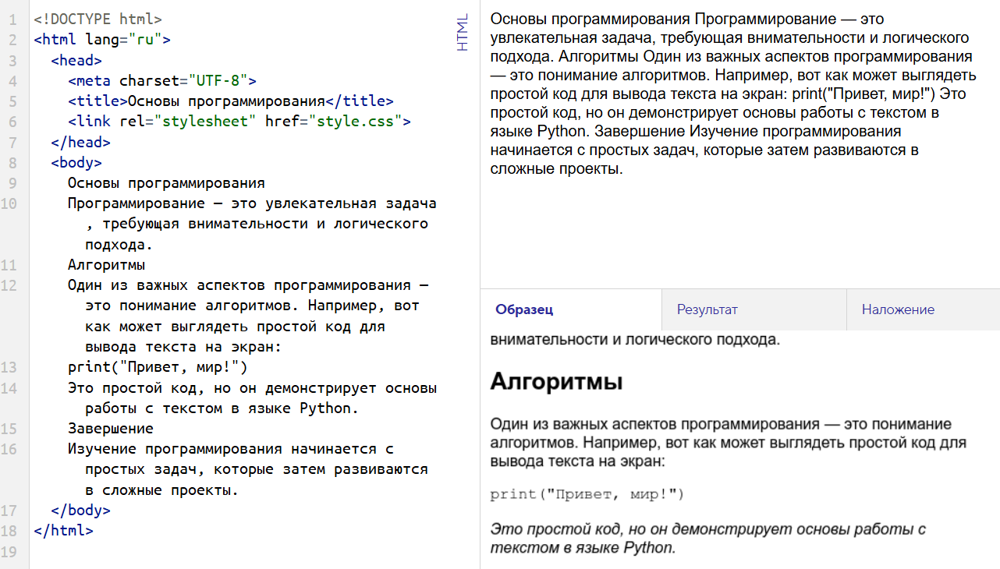

Основы программирования Программирование — это увлекательная задача, требующая внимательности и логического подхода. Алгоритмы Один из важных аспектов программирования — это понимание алгоритмов. Например, вот как может выглядеть простой код для вывода текста на экран: print("Привет, мир!") Это простой код, но он демонстрирует основы работы с текстом в языке Python. Завершение Изучение программирования начинается с простых задач, которые затем развиваются в сложные проекты.
Программирование — это увлекательная задача, требующая внимательности и логического подхода.
Один из важных аспектов программирования — это понимание алгоритмов. Например, вот как может выглядеть простой код для вывода текста на экран:
print("Привет, мир!")Это простой код, но он демонстрирует основы работы с текстом в языке Python.
Изучение программирования начинается с простых задач, которые затем развиваются в сложные проекты.
